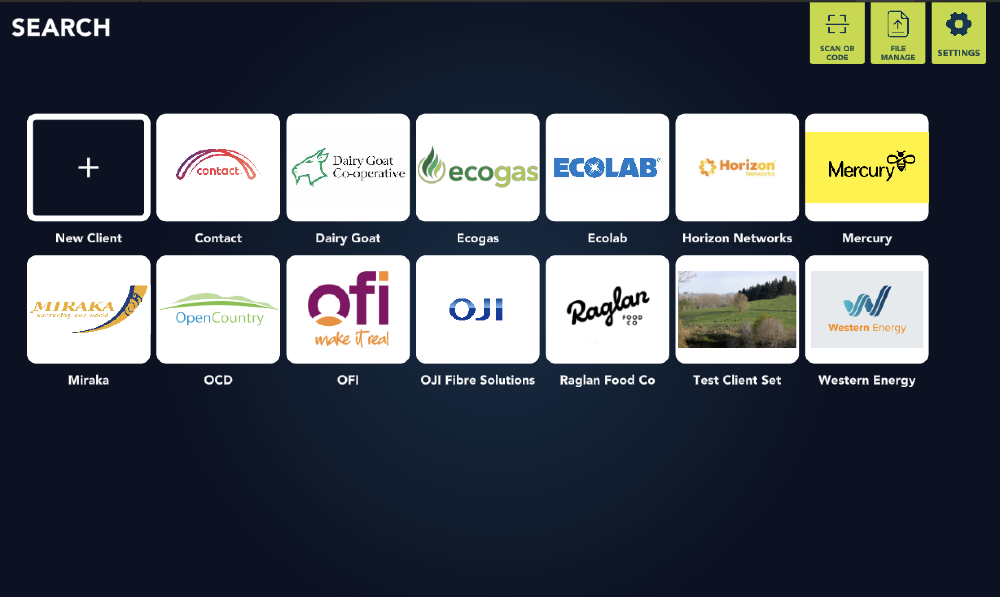

About me
I’m a Unity developer based in Auckland, New Zealand, working across games, VR simulation, and interactive training software. Over more than a decade of professional C# development, I’ve shipped projects across mobile, desktop, and head-mounted platforms, but the thread that runs through all of my work is a belief that interactive systems can make complex ideas feel intuitive.
I’m drawn to the point where design and development overlap: where responsiveness, clarity, and feel shape whether something is merely functional or genuinely engaging. In games, that means building experiences with enough craft and momentum to keep players invested. In training software, it means creating systems where learning happens naturally through doing, exploration, and feedback.
I like getting ideas into a playable state early, because there is often a real gap between the idea of something and the reality of it. For me, iteration is where good work emerges: testing, refining, and pushing toward software that feels polished, considered, and worth people’s time.
I’m a software engineer based in Auckland, New Zealand, working across agentic AI systems, interactive software, and real-world product engineering. Over more than a decade of shipping production software across C#, TypeScript, and Python, I’ve built everything from games and VR training systems to local-first LLM tools, retrieval pipelines, and agents that support real workflows end to end.
The thread that runs through my work is a belief that good software should make complexity feel manageable. I’m especially drawn to systems that sit at the overlap of design, engineering, and behaviour: where the challenge is not just getting a model or feature to work, but shaping it into something clear, dependable, and genuinely useful.
In AI work, that means building more than a chat interface. I’m interested in the engineering around the model: tool design, retrieval, structured outputs, evals, orchestration, latency, and the practical realities of integrating AI into products that people actually use. A recent example is Porter, my local-first job application agent, which combines structured parsing, RAG over my own career corpus, and a Playwright sidecar that can carry tasks through in the browser.
I like getting systems into a working state early, because there’s usually a gap between what seems convincing in theory and what holds up in practice. For me, good work comes from iteration: testing, refining, and building toward software that feels considered, resilient, and worth relying on.
What I'm doing
-

AI Development
Practical AI systems. I build AI features that connect models to real product workflows: AI-driven NPCs for VR training, local-first agents, retrieval pipelines, tool use, and automation that can be tested, maintained, and shipped with confidence.

shape · home SQLite-backed local research stack tracking markets, prices, news, backtests, and per-run model reasoning. 
shape · grounded chat Read-only SQLite tools let the model answer from traceable data, with every tool call visible in the interface. 
Porter · macOS queue Local-first job agent with a Playwright sidecar for completing real ATS forms, keeping each submission reviewable. 
GenerateVR · pipeline Structured scenario generation with optional retrieval over customer source material, keeping output grounded and reviewable. Useful AI features depend on the engineering around the model: clear tool contracts, structured outputs, retry behaviour, evaluation, and product decisions that help people understand what the system is doing. That is the layer I enjoy most — turning capable models into dependable features.
Sometimes that means local models for privacy and latency; sometimes it means frontier models for capability. The important part is choosing deliberately, then building the surrounding system so the feature remains predictable, observable, and useful after the first demo.
See it in action -

Desktop & Mobile Apps
Cross-platform applications for environments where reliability matters: offline-first field tools, companion mobile apps, headset-based training products, and the supporting services that keep them running.
Porter · macOS Native menu-bar agent with private retrieval over resume and writing samples, designed to keep sensitive job-search data local. 
Hospitality Passport · Quest Front-of-house training built around interactive props, NPC decision points, and repeatable deployment across Quest fleets. 
Child Welfare VR · Quest VR home assessment where social-work trainees identify safety and protection factors before making scenario decisions. 
Museum of the Bible · AR-adjacent Mobile companion experience guiding children through story missions and exhibit-linked activities. Cross-platform apps earn trust through the details: reliable offline behaviour, clean recovery when a connection returns, clear multi-tenant boundaries, and interfaces that stay usable in the field. Those decisions are often invisible, but they are what keep a product useful long after launch.
I’ve worked across architecture, implementation, polish, and long-term maintenance for products that run on desktops, mobile devices, and managed headset fleets. Different surfaces, same standard: software that remains dependable in the conditions people actually use it in.
See it in action -
AI Development
AI systems that do useful work.
I build practical AI features end-to-end: tool use, structured outputs, retrieval, evaluation loops, self-hosted models, and workflows that connect models to real products. The goal is software people can understand, trust, and rely on.Featured proofShape turns live context into testable decisions.
Local Gemma reads market-relevant news, calls read-only SQLite tools, then scores each decision in a no-lookahead replay. Paper-trading only; the proof is traceable state, visible tools, repeatable runs.
Open shapeFeatured proofPorter ships applications without your résumé leaving your laptop.
Bring your own model. Porter is the harness — a structured-output pipeline with RAG over your career, an eval suite that keeps prompts honest, and a Playwright sidecar that drives the actual ATS forms. Local Ollama or hosted Claude, your call.
Open PorterThe most important AI work often sits between the model and the user: tool contracts, structured-output guards, evaluation harnesses, traceability, and product decisions that make behaviour understandable. That is what turns an impressive demo into a tool someone can trust.
I use local models when privacy or latency matters, and frontier models when capability is the priority. Either way, I care about systems that keep running, keep passing their checks, and leave behind reasoning people can inspect.
See it in action -
Desktop & Mobile Apps
Production software beyond the prototype.
I build and maintain cross-platform applications across desktop, mobile, and headset environments: offline-first systems, multi-tenant products, companion tools, and the infrastructure behind them. I’m comfortable owning architecture, implementation, polish, and long-term reliability.
Porter · macOS Local-first desktop workflow with cached evaluation runs and reproducible demo data for safer iteration. 
Hospitality Passport · dialogue Reusable dialogue and TTS pipeline that lets writers revise NPC lines without waiting on code changes. 
Child Welfare VR · branching Branching in-world interviews present realistic response choices and adapt the scenario based on trainee decisions.
Museum of the Bible · routing Mobile companion routing that adapts a child’s museum journey around age, timing, interests, and the adult itinerary. I build for devices that leave controlled environments: headsets used in training, tablets used on-site, and laptops that have to keep working wherever the job is happening. Offline-first data affects everything: capture, sync, conflict resolution, and the UI states that only appear when connectivity is unreliable.
The work spans different form factors, but the goal is consistent: products that stay usable, recover cleanly, and remain maintainable years after launch.
See it in action -

Pipelines & Automation
The systems around the model.
Strong AI products need more than prompts. I build repeatable pipelines, evaluation harnesses, telemetry, deployment flows, caching, and operational tooling so AI features are easier to ship, observe, and improve over time.
Furlong · n8n graph Self-hosted 12-node workflow that scrapes curated NZ racing sources, dedupes against a rolling SHA-1 index, and sends the morning email. 
Furlong · 6am digest A custom Code node renders the digest; SMTP handles the 6am NZT delivery without manual follow-up. 
Furlong · code node Normalises source content through HTML extraction, cleanup, and SHA-1 hashing before the dedupe check. 
Porter · agent pipeline Structured-output pipeline from posting to requirement tree, fit score, and tailored draft, with the loop kept local. Shipping AI features takes repeatable infrastructure: evaluations that catch model regressions, caches that control cost and latency, structured-output validation, and telemetry that shows what users actually received. I enjoy building the operational layer that lets a demo become a product.
Furlong is a simple example of that preference: a self-hosted twelve-node n8n workflow that scrapes curated NZ horse-racing sources, dedupes them against a rolling SHA-1 index, and sends a daily digest at 6am. Small, reliable, explainable automation is the shape I keep aiming for.
See it in action -

Reporting & Monitoring
Systems that make work visible.
I build automated reporting, usage telemetry, performance dashboards, scheduled summaries, and lightweight monitoring that help teams understand what is happening without creating more manual reporting work.
Comsim · workspace entry Role and organisation entry point before field teams move into client and asset workflows. 
Comsim · client search Client and file management surface for finding the right field context quickly. 
Comsim · calibration form Inspection checks, notes, measurements, and PDF generation in one field-ready workflow. Products often need better visibility as much as they need new features. On Comsim, that meant usage analytics, error reporting, user-flow traces, and bottleneck hunting so the team could see where field engineers were getting stuck instead of guessing.
Paired with scheduled summaries and lightweight dashboards, that kind of instrumentation helps the work explain itself: what was captured, where people paused, what failed, and which parts of the workflow need attention.
See it in action -

VR Development
Immersive training and game systems. I build VR experiences from prototype through release: interaction design, scenario flow, multiplayer support, and performance optimisation across Quest, Pico, and PC-VR.

VR Singing Club · Quest Social karaoke prototype with node-based dialogue tools for wiring NPC behaviour and speech without code changes. 
Working at Heights Immersive height-safety training with competency mapping aligned to NZQA standards and varied scenario flow. 
The Aetherlight · MMORPG Cross-platform combat systems with team synergy and combo mechanics, shipped across mobile and PC.
Hospitality Passport · Quest In-world tablet UI, visual guidance, and outcome tracking for scalable training content. Good VR depends on small decisions adding up: frame budgets, hand feel, spatial audio, readable interaction cues, and locomotion choices that support comfort instead of distracting from the task. Those details determine whether a simulation feels natural enough for people to focus on what they are learning.
I’ve worked across interaction design, multiplayer networking, performance, and platform-specific delivery for safety training, social VR, and cross-platform games. The aim is always the same: immersion that supports the experience instead of getting in its way.
See it in action -

Game Development
Full-cycle game development from playable prototype to polished release: responsive mechanics, readable systems, performance-conscious implementation, and the production discipline to ship on small teams and larger studio projects.

Dungems · reverse-dungeon Reverse-dungeon design built around traps, tunnels, trained monsters, and AI heroes testing the player’s layout. 
Crossy Road Castle · Apple Arcade Co-op tower climber with couch and online multiplayer, shipped on Apple Arcade. 
Huia · narrative Narrative exploration through hand-painted Aotearoa environments, ecology, and folklore-inspired storytelling. 
Tumbly Beasts · physics runner Procedural physics runner with mobile release features, social sharing, and supporting sticker-pack content. The part I keep returning to is feel: timing, responsiveness, readable feedback, and systems that make player decisions clear. Whether it is a physics runner, a co-op platformer, or a strategy game, those details are what make a game easy to understand and satisfying to keep playing.
I’ve shipped on Apple Arcade, in independent studios, and across iOS, Android, PC, and console. I like the combination of creative iteration and practical engineering required to make a game hold together all the way to release.
See it in action